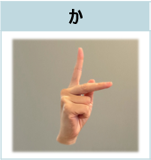
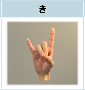
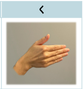
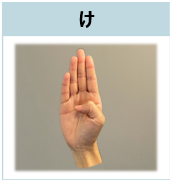
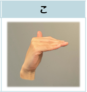

か
「か」の指文字
人さし指と中指を立てて中指を前に出します。これはアルファベットの｢k｣の指文字と同じです。

き
「き」の指文字
人差し指と薬指を立てて、影絵で「きつね」を表現する指の形にします。

く
「く」の指文字
手の甲を相手側に向けて指を伸ばし、親指だけ上向き、それ以外の4本を横向きにします。これは数字の「9」の指文字と同じです。

け
「け」の指文字
指を揃えて伸ばし、立っている毛の形を表現します。これはアルファベットの「b」の指文字と同じです。

こ
「こ」の指文字
小指が相手側に向くようにして伸ばし、親指以外の4本指を直角に曲げます。これはカタカナの「コ」の一部を表現しています。